Работа с заявками
Базовые правила перед началом:
- Не пишем преподавателям аббревиатуры «ПУ», «СВУ», «ОРК». Термин «ВУ» использовать можно.
- Для русскоязычного преподавателя и носителя языка не нужно создавать разные ЛК.
- Если нет подходящего преподавателя, используем дополнительные каналы, чтобы ускорить подбор.
Нет подходящего преподавателя
Гайд для ситуаций, когда подходящего преподавателя нет и подбор затягивается.
- В сложных кейсах можно писать преподавателям с закрытым набором, если нет запрещающих тегов.
- Основной канал для таких запросов - чат с методистами.
-
Если преподаватель подходит по расписанию, но не относится к Select Plus, уточните у его методиста, можно ли предложить этого преподавателя студенту.
Методист подскажет, готов ли преподаватель к переходу в Select Plus или насколько он подходит под запрос. Даже если категория Select, при рекомендации методиста можно прозрачно предложить этот вариант студенту и дать ему выбрать.
-
Если идеального варианта нет, но есть частично подходящие кандидаты (не тот уровень, не та категория и т.д.), также пишите в этот чат. Методисты помогут с решением или предложат альтернативу, чтобы клиент не ждал слишком долго.
-
В чате «Менеджер спрашивает-методист отвечает» сообщение видят несколько методистов, поэтому шанс быстро получить ответ и дополнительные варианты выше.
А также подхватят вопрос, если методист нужного вам преподавателя:
- в отпуске, на больничном или временно недоступен;
- не увидел сообщение вовремя — другой методист сможет предложить замену или альтернативу.
Это помогает заметно ускорить подбор для студентов, которым сразу сложно предложить подходящего преподавателя.
Новые студенты без истории занятий
Нажмите на подблок, чтобы открыть содержание
Сначала проверяем в заявке все поля и приводим их в порядок, если что-то не так заполнено.
- ФИ студента в отдельном поле своем прописываем.
- Латиницу меняем на кириллицу (т.е. англ. буквы на русские).
- Букву Ё меняем на Е.
- Ставим верный часовой пояс.
- Города нужно прописывать полностью. Варианты: СПБ, МСК, МО, Питер и т.д. - категорически не подходят, меняем.
- Если странно указан возраст, например, "-1", то убираем это, ставим "-", если нет у нас информации.
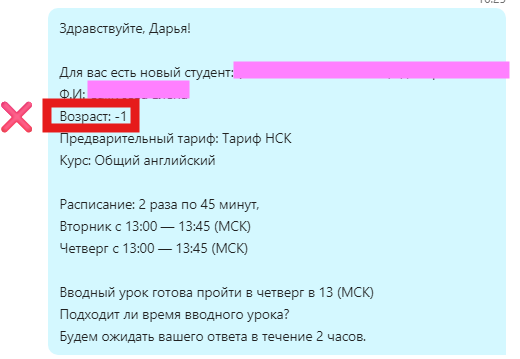
- Сверяемся с информацией, которую указывают координаторы в заявке, а также по запросу студента. Например, 1 раз в неделю, 60 минут или сменный график нельзя поставить на курсе Английский 360.
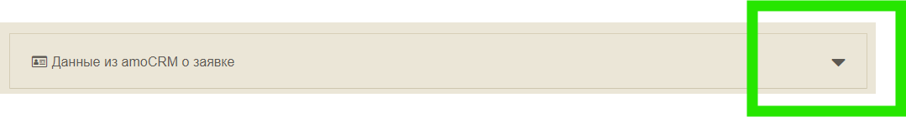
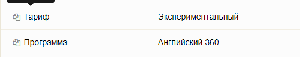
- При предложении ученика нового или старого, преподавателю обязательно сообщайте тариф (без уточнений архивности и даты тарифа):
- Выгодный.
- Комфортный (или для своих, условия как на Комфортном).
- Усиленный.
- НСК.
- Премиум тариф.
Это поможет преподавателю ориентироваться, какой вариант ВУ брать для студента и какой заполнять отчет ВУ: старого или нового формата.
Это условие методистов: преподаватели должны сами определить уровень студента.
Исключение
Если студент никогда не учил английский, ничего не знает и не может говорить, тогда об этом преподавателю сообщаем.
Неверные варианты на скриншотах:
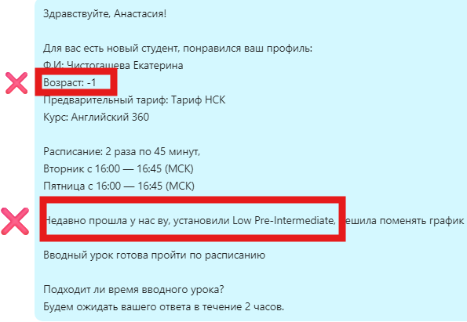
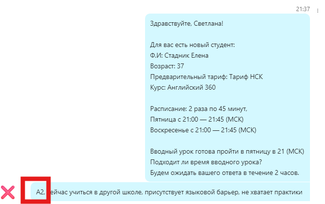
- ВСЕГДА полностью копируем комментарий от координаторов в поле заявки "Пожелания по обучению", кроме уровня со слов студента.
- И передаем преподавателю, если там есть дополнительная информация, которая касается студента и пригодится преподавателю.
- Просто добавляем это к стандартному шаблону при предложении преподавателя.
- Если есть дополнительная информация по курсу (например, студент склоняется к 360, но может попросить Общий английский адаптивный), обязательно указываем это в разделе «Курс».
- Сообщение можно редактировать перед отправкой.
- Так преподаватель сразу понимает, что может поменять курс при необходимости и оставить комментарий в отчете, почему курс был изменен.
Например, в таком ключе:
Так правильно
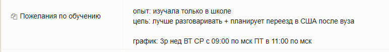
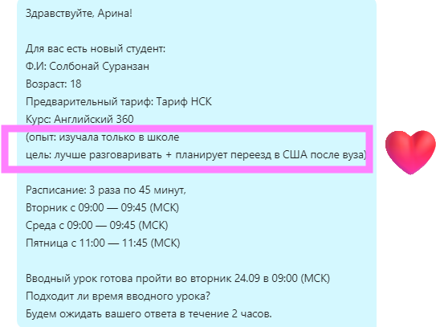
Так не делаем
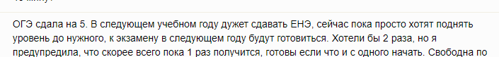
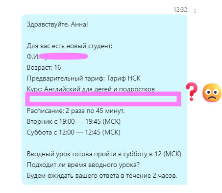
- Сообщаем, сколько ВУ до этого прошел студент с другими преподавателями.
- Считаем за последний месяц, прошлые периоды и годы не учитываем.
- Сейчас есть 3 варианта ВУ (тестовых заданий на определение уровня), поэтому важно, чтобы с каждым новым преподавателем студент проходил разные варианты, а не один и тот же.
Так правильно
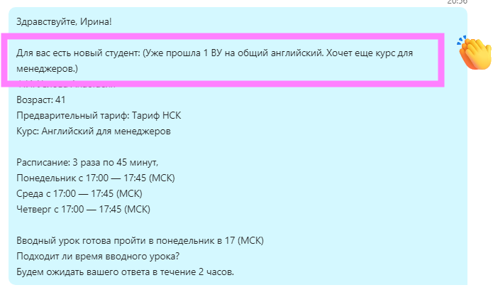
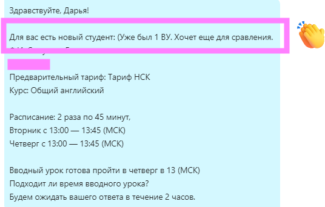
Если нашли преподавателя в этот же день:
-
Позвонить клиенту, чтобы предложить преподавателя, график и дату ВУ.
-
Если нет ответа на звонок, проверить указанный в заявке удобный способ связи и отправить предложение в выбранный канал (например, WhatsApp или Telegram). Дополнительно можно продублировать на e-mail и заложить срок на подтверждение графика 2 дня.
- На второй день после предложения преподавателя, расписания и даты ВУ обязательно позвонить. Если ответа нет, написать в тот же источник: сообщение в мессенджер или письмо на почту.
- На третий день (вторые сутки от предложения преподавателя) сделать контрольный звонок. Если нет ответа на звонок и на сообщения/письма, отправить клиенту финальное сообщение и отклонить заявку.
Чтобы всем проще было работать с вашими заявками, когда вы на выходном 🙂
Чтобы не “провисали” и не копились с неактуальными статусами 🙂
Если не выходит на связь студент с вами и закрываете заявку, то не забывайте:
- менять статус на “архивный”.
- отклонять саму заявку.